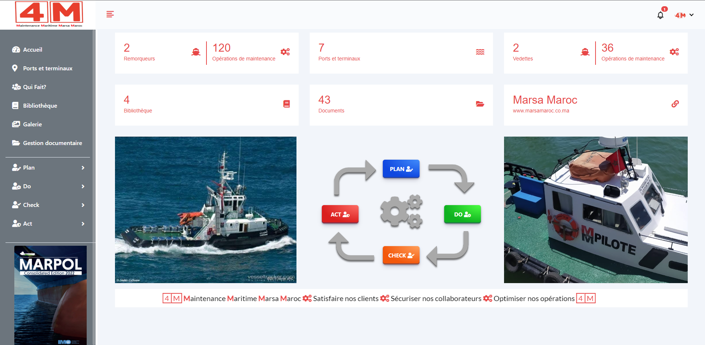

4M: Maintenance Maritime Marsa Maroc
4M is a national-scale maintenance management web application developed for Marsa Maroc, the main port operator in Morocco. This system centralizes the monitoring, maintenance, and management of all port equipment (engins) across the company’s entire network of ports throughout the country.
The system facilitates the day-to-day operations at a port or harbor by providing tools to:
Key Features:
- Admins can manage multiple ports, each with its own set of machines, operations, and teams.
- Track and manage all maritime machines and equipment (engins).
- Attach detailed technical machines to each engin.
- Track usage through counters and log new starts (nouveau démarrage).
- Create, edit, and monitor preventive and corrective maintenance operations.
- Assign and track tasks for each operation in a structured workflow.
- Monitor the execution of maintenance tasks in real-time per machine or operation.
- Conduct inspections (check) with the ability to archive and explain findings or anomalies.
- Log and update corrective actions taken in response to check reports or equipment issues.
- Maintain a technical library with manuals, guides, and procedures.
- Manage documents with the document management system (Gestion Documentaire).
- Upload and organize photos in the media gallery for documentation or reporting.
- Admin-only access to manage ports and assign responsibilities.
- Use the "Qui Fait Quoi" (Who Does What) module to manage roles and duties.